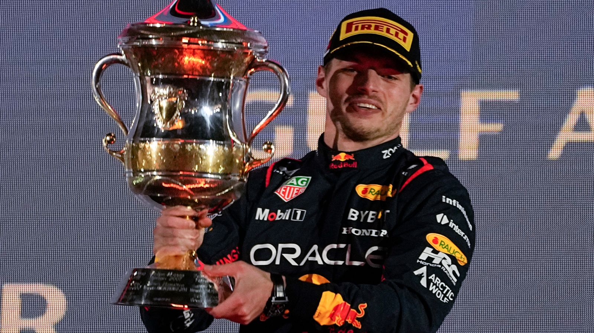

2003—2013
As primeiras voltas
Max começa no kart ainda criança e conquista títulos nas categorias de base, construindo a reputação de um talento excepcional.
PILOTO DE FÓRMULA 1 · PAÍSES BAIXOS
Velocidade. Precisão. Mentalidade de campeão.
Uma trajetória marcada por talento, coragem e quatro títulos mundiais na Fórmula 1.

MOMENTO DE CAMPEÃO
Talento, dedicação e foco fazem parte da trajetória de Max Verstappen na Fórmula 1.
01 — PERFIL DO PILOTO
Um registro de Max Verstappen celebrando uma conquista na Fórmula 1.
Max Emilian Verstappen nasceu em 30 de setembro de 1997, em Hasselt, na Bélgica, e compete sob a bandeira dos Países Baixos.
Filho do ex-piloto de Fórmula 1 Jos Verstappen e da ex-kartista Sophie Kumpen, Max cresceu em contato com o automobilismo. Começou no kart ainda criança e rapidamente chamou atenção pela agressividade controlada e pela velocidade.
Em 2015, estreou na Fórmula 1 com apenas 17 anos. Em 2016, foi promovido à Red Bull Racing e venceu o Grande Prêmio da Espanha em sua primeira corrida pela equipe — tornando-se o vencedor mais jovem de um GP na história da categoria.
Frenagens tardias, ritmo intenso, leitura de corrida e confiança nas disputas roda a roda.
02 — CAMINHO ATÉ O TOPO
Max começa no kart ainda criança e conquista títulos nas categorias de base, construindo a reputação de um talento excepcional.
Chega à Fórmula 1 pela Toro Rosso aos 17 anos, tornando-se o piloto mais jovem a disputar uma corrida da categoria.
Promovido à Red Bull, vence o GP da Espanha na estreia pela equipe e estabelece o recorde de vencedor mais jovem de um Grande Prêmio.
Em uma temporada disputada até a última etapa, conquista seu primeiro campeonato mundial de pilotos.
Conquista quatro títulos consecutivos, de 2021 a 2024, e estabelece marcas impressionantes, especialmente na temporada de 2023.
03 — RESULTADOS QUE MARCAM
Títulos conquistados em temporadas consecutivas: 2021, 2022, 2023 e 2024.
Em 2023, alcançou uma sequência recorde de dez vitórias seguidas em Grandes Prêmios.
Uma temporada dominante que estabeleceu um recorde de pontuação para um piloto em um único campeonato.
Números e marcos históricos apresentados como referência da carreira; estatísticas atuais podem mudar ao longo das temporadas.
O talento abre a porta.
A consistência mantém você no topo.
MENTALIDADE DE COMPETIDOR
04 — ATMOSFERA DE CORRIDA


A foto de Max Verstappen com o troféu foi fornecida pelo usuário; as demais imagens da galeria são ilustrativas.